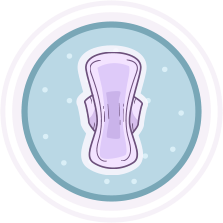
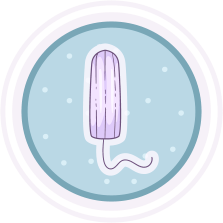
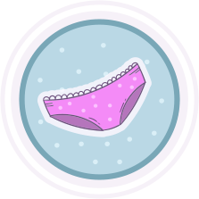
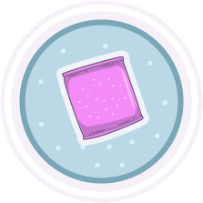
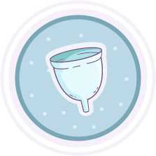

Pads
Pads are made of material that can absorb period blood. They go in the bottom of your underwear and catch the blood that comes out during your period. They have sticky material or wings that fold over the side of your underwear to keep them in place.
To use a pad, peel off the paper over the sticky strip and press it into the crotch of your underwear. You should change a pad about every 4 hours to stop bacteria from growing. Of course, you can change them more often if you need to so blood doesn't leak out. If it does leak a bit, don't worry, it happens to everyone at some point. Just put in a new pad. Throw the old pad in the trash, not down the toilet.
Pads are usually what people use first when they get their period, but adults use them too. There are many kinds of pads. A trusted adult can help you find the right one for you.

Tampons
Tampons are also made of material that absorbs period blood. They go inside the vagina. Tampons often come in a tube called an applicator, which is used to help put it in the vagina.
To put in a tampon, it helps to be relaxed. Use your fingers (or a mirror) to find the opening to your vagina. It may help to sit on the toilet or put one foot up on a seat. Open the tampon. The tampon may have a plastic applicator to help you guide it in. Gently push the tampon towards your lower back (not straight up towards your head). Push the tampon as far back as it will go. If it feels uncomfortable, just take a deep breath, take it out, and try again. If it has an applicator, push the top part in and then remove it. The tampon string should hang out of your vagina. You shouldn't feel the tampon at all.
To remove it, pull it out by the string and throw it in the trash, not the toilet. Never leave a tampon in more than eight hours (you can get an infection called toxic shock syndrome). Changing a tampon every 4–6 hours is a good idea. And you can change them as often as you need if you have a heavier flow, so blood doesn't leak into your underwear.

Period Panties
Period panties are special underwear made to absorb period blood. They are worn just like regular underwear, but you usually need to change them every 12 hours and wash them specially.
Period panties can also be a nice backup for other supplies. You can wear them with a pad or tampon if you are worried about leaking.

Panty Liners
Panty liners are like pads for when you are not on your period. They are small and can catch vaginal discharge, or very light flow at the beginning or end of your period. They are not used on period days. For those you should use a pad.

Menstrual Cup
Menstrual cups are designed to go in the vagina and catch blood. The blood then needs to be dumped in the toilet or sink a few times a day.
Some people find cups difficult to use, so you may want to try one of the other supplies first.
What if I stain my clothes?
This happens to everyone with a period at some point, so even if you feel awkward about it, remember it's okay. You can wrap a sweater around your waist or keep a change of clothes in your backpack or locker. It's okay to ask to go home if you want to.
Source: TeenHealth